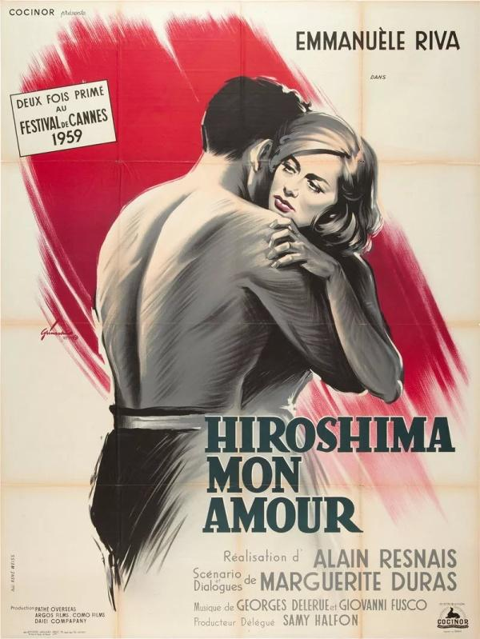
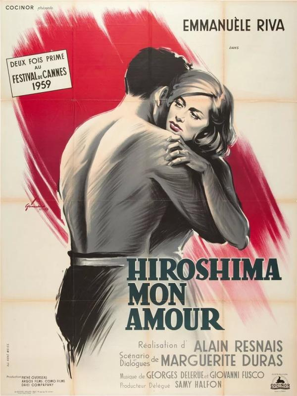
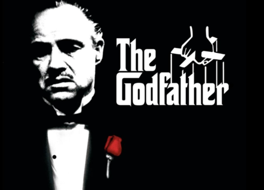
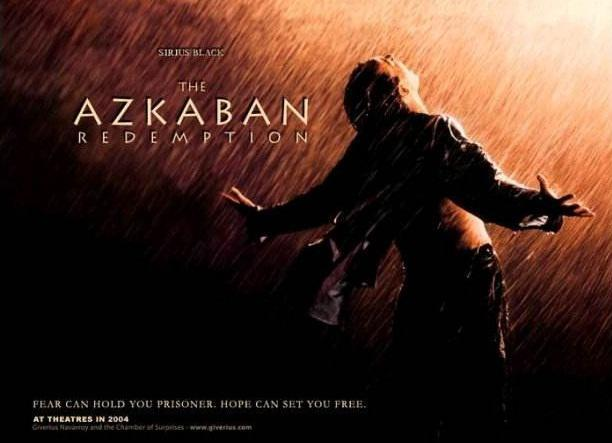
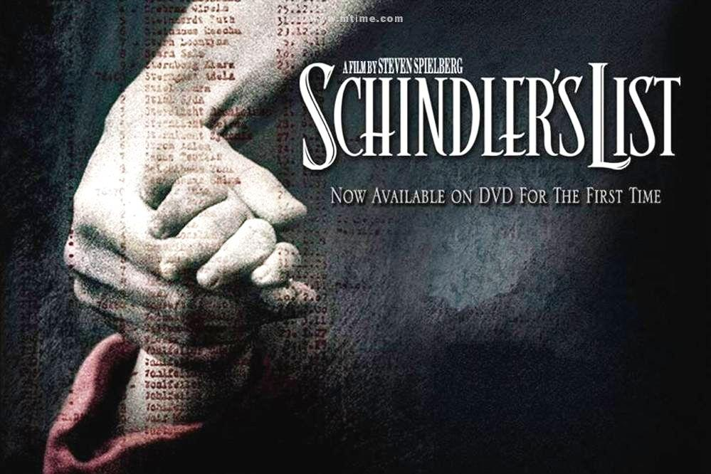
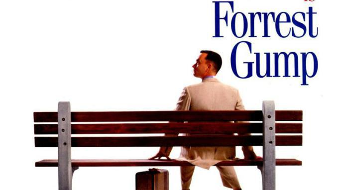
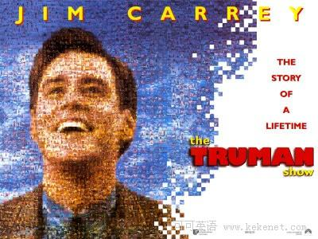
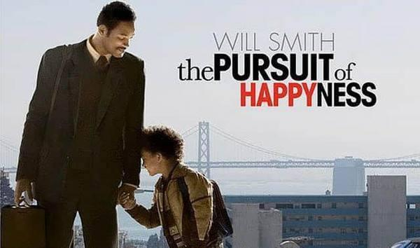

现代主义主张在文艺创作过程中摆脱理性的"束缚"，用非理性的直觉、本能、潜意识活动、意志等"原始力量"在作品中体现出创作者的真正的"自我"。它强调创作者要在作品中表达出自己对事物的直接的原始的感受，不要经过理性的综合概括，所以作品的含义应当"因人而异"，"自行求解"。为了达到这个目的，它在发展过程中便逐步地、最后是彻底地否定了情节结构、人物行为动机、性格发展逻辑、形象的比例尺度、色彩的合理配置等一切"旧文艺"的"程式"。

概述
现代主义主张在文艺创作过程中摆脱理性的"束缚"，用非理性的直觉、本能、潜意识活动、意志等"原始力量"在作品中体现出创作者的真正的"自我"。它强调创作者要在作品中表达出自己对事物的直接的原始的感受，不要经过理性的综合概括，所以作品的含义应当"因人而异"，"自行求解"。为了达到这个目的，它在发展过程中便逐步地、最后是彻底地否定了情节结构、人物行为动机、性格发展逻辑、形象的比例尺度、色彩的合理配置等一切"旧文艺"的"程式"。
 

《广岛之恋》是由阿仑·雷乃执导，埃玛妞·丽娃、冈田英次等主演的爱情电影。该片于1959年6月10日在法国上映。
该片讲述了一位法国女演员与日本建筑师之间的爱情故事。
影片的内涵或者说主题显然是极为复杂、朦胧暧昧和晦涩难解的。从外显的层次看大致是爱情、和平反战、博爱、人性与人道主义等等。而从深层次看，影片表现的是关于时间、记忆和遗忘的主题。作为二十世纪西方现代主义文艺思潮的有机组成“新浪潮”和“左岸派”的一部代表性作品，《广岛之恋》表达了极为深刻的现代主义主题，表达了人的存在的本体论危机，以及对自我存在的价值和意义的质疑与反思，对时间的深刻焦虑等等。它探入到人的深层心理世界和潜意识精神领域。从而深刻地揭示出，没有什么纯粹的现在，时间是一条不断的长河，过去如梦，时间似水，过去像梦魇一样缠绕着现在，沉沉的压着现在的人生。当然，这样的影片主题是朦胧暧昧而多义分层的。加之影片对情节的淡化、人物性格的不明确、不完整的性格冲突等等，进一步强化了整部影片主题及风格上的朦胧暗暖性。导演似乎把思考的权利完全交还给了观众，不同的观众会有深浅不一的思考，但却属于自己的所思所得。
总体而言，这是一部有着典型现代主义主题与风格的，非常抒情的、感染力极强的，沉重压抑而又如行云流水般飘忽迷茫的诗化电影。

《教父》是由弗朗西斯·福特·科波拉执导，马龙·白兰度、阿尔·帕西诺等主演的黑帮电影，于1972年3月24日在美国上映。
该片改编自马里奥·普佐的同名小说，讲述了以维托·唐·柯里昂为首的黑帮家族的发展过程以及柯里昂的小儿子迈克如何接任父亲成为黑帮首领的故事。1973年该片获得第45届奥斯卡奖最佳电影、最佳男主角、最佳改编剧本奖。2007年被美国电影协会选为“百年百佳影片第二位”。
40年代的美国，教父维托·唐·柯里昂（马龙·白兰度 饰）是黑手党柯里昂家族的首领，带领家族从事非法的勾当，但同时他也是许多弱小平民的保护神，深得人们爱戴。 因为拒绝了毒枭索洛索的毒品交易要求，柯里昂家族和纽约其他几个黑手党家族的矛盾激化。圣诞前夕，索洛索劫持了教父的参谋汤姆，并派人暗杀教父；因为内奸的出卖，教父的大儿子逊尼被仇家杀害；小儿子麦克（阿尔·帕西诺 饰）也被卷了进来，失去爱妻。黑手党家族之间的矛盾越来越白热化。 在教父病故之后，麦克开始了酝酿已久的复仇。他派人刺杀了另两个敌对家族的首领，并亲自杀死了谋害他前妻的法布里奇奥。同时他也命人杀死了卡洛，为逊尼报了仇。仇敌尽数剪除。康妮因为丈夫被杀而冲进了家门，疯狂地撕打麦克。迈克命人把她送进疯人院。他已经成了新一代的教父。
《教父》的深层意义在于它为美国电影史上的犯罪片开拓了宽广的前景。这部电影不仅拓展了犯罪片的表现领域，其思想意义和内涵也远远超越了暴力的范畴，并将主题升华为人类社会中最常见的权力交替中的深层意义——权力与罪恶的关系。

《肖申克的救赎》是由弗兰克·德拉邦特编剧并执导的美国剧情片，由蒂姆·罗宾斯、摩根·弗里曼领衔主演。
该片根据斯蒂芬·埃德温·金1982年的中篇小说《肖申克的救赎》改编，主要讲述了男主角银行家安迪因枪杀妻子及其情人的罪名入狱后，与能为狱友走私各种违禁商品的埃利斯成为了朋友，安迪不动声色、步步为营地谋划自我拯救并最终成功越狱，重获自由的故事。一个监狱，里面的囚犯和官员，似乎是这个社会的众生相，典狱长诺顿高高在上，平时道貌岸然，对圣经倒背如流，实际上攫取利益时不择手段，残酷、阴险而贪婪。警卫队长哈德利和其他狱警凶狠残暴，充当诺顿的打手，草菅囚犯的人命。他们是不是像极了观众们现实中的掌权阶层？观众们可以称之为监狱这个“小社会”的统治者。
公众对《肖申克的救赎》影片的巨大喜爱，或许是因为托马斯·纽曼辛酸的配乐，但更重要的是，罗宾斯和弗里曼两个囚犯之间动人的人物刻画和深厚的友谊，这突出了人类精神的持久韧性。
《肖申克的救赎》是20世纪90年代最振奋人心，也是在道德上最令人满意的电影之一。这并非只是因为它包含了宗教因素，上帝从来不会眷顾肖申克，而是因为它是一部在两个人之间不可动摇的友谊中寻找希望的故事。关键的是，作为一部根据斯蒂芬·金的一个非恐怖短篇小说改编的年代片，该片从未衰老。它是一个关于保持一个人的正直和个人自由的道德寓言，不论身处何种环境。这一点在现实生活中也是真实的，就如同在这部虚构的寓言中一样。

《辛德勒的名单》是由史蒂文·斯皮尔伯格执导，连姆·尼森、本·金斯利、拉尔夫·费因斯、艾伯丝·戴维兹等主演的一部战争片。该片于1993年11月30日在美国华盛顿点映，1993年12月15日在美国正式上映。
该片改编自澳大利亚小说家托马斯·肯尼利的同名小说，讲述了一名身在波兰的德国人辛德勒，在二战时雇用了1100多名犹太人在他的工厂工作，帮助他们逃过被屠杀的劫数。
为了报答辛德勒的救命之恩，在二战中死里逃生的波德克·菲佛伯格决定倾尽一生去讲述辛德勒拯救犹太人的故事。1963年，菲佛伯格试图与米高梅公司合作拍摄一部关于辛德勒的传记片，但最终未能如愿。1982年，澳大利亚小说家托马斯·肯尼利在遇见菲佛伯格之后，出版了小说《Schindler's Ark》。美国音乐公司总裁西德·谢恩伯格交给史蒂文·斯皮尔伯格一份《纽约时报》的书评，斯皮尔伯格被辛德勒的故事震惊了，甚至对小说内容的真实性提出置疑，他想知道是什么驱使一个男人倾其所有去挽救那些无辜的生命，产生浓厚兴趣的斯皮尔伯格希望环球影业能买下小说的改编拍摄权。
它描述了战争、种族、性、信仰、信念、金钱、同情、国家、生生存活、觉醒、循环、困厄、侵犯、坚守、放弃，它说的是流离、剥夺，它说的是一条红色的童裙，它在说底线，它在说家园，肉与灵。它是一部电影，是一部史诗，是一段历史，是一个民族的创伤与性灵！

《阿甘正传》是由罗伯特·泽米吉斯执导的电影，由汤姆·汉克斯、罗宾·怀特等人主演，于1994年7月6日在美国上映。《三峡好人》是由贾樟柯执导，赵涛、韩三明主演的剧情电影，该片于2006年12月14日在中国大陆上映。该片讲述了煤矿工人韩三明和女护士沈红从山西来到重庆奉节，分别寻找已离开自己十六年的前妻和分离两年的丈夫的故事。
电影改编自美国作家温斯顿·格卢姆于1986年出版的同名小说，描绘了先天智障的小镇男孩福瑞斯特·甘自强不息，最终“傻人有傻福”地得到上天眷顾，在多个领域创造奇迹的励志故事。电影上映后，于1995年获得奥斯卡最佳影片奖、最佳男主角奖、最佳导演奖等6项大奖。
阿甘（汤姆·汉克斯 饰）于二战结束后不久出生在美国南方阿拉巴马州一个闭塞的小镇，他先天弱智，智商只有75，然而他的妈妈是一个性格坚强的女性，她常常鼓励阿甘“傻人有傻福”，要他自强不息。阿甘像普通孩子一样上学，并且认识了一生的朋友和至爱珍妮（罗宾·莱特·潘 饰），在珍妮和妈妈的爱护下，阿甘凭着上帝赐予的“飞毛腿”开始了一生不停的奔跑。阿甘成为橄榄球巨星、越战英雄、乒乓球外交使者、亿万富翁，但是，他始终忘不了珍妮，几次匆匆的相聚和离别，更是加深了阿甘的思念。有一天，阿甘收到珍妮的信，他们终于又要见面……
这部影片的独特之处在于，它重新肯定了旧的道德及社会主体文化，宣扬了60年代美国的主流意识形态，同时它又否定了其他前卫的新文化。我想正是基于此，它才能深得美国民心。
《海上钢琴师》是由朱塞佩·托纳托雷执导，蒂姆·罗斯、比尔·努恩、梅兰尼·蒂埃里主演的剧情片，于1998年10月28日在意大利上映。
该片改编自亚利桑德罗·巴里克文学剧本《1900：独白》，讲述了一个被命名为“1900”的弃婴在一艘远洋客轮上与钢琴结缘，成为钢琴大师的传奇故事。
900年，Virginian号豪华邮轮上，一个孤儿被遗弃在头等舱，由船上的水手抚养长大，取名1900（蒂姆•罗斯 饰）。1900慢慢长大，显示出了无师自通的非凡钢琴天赋，在船上的乐队表演钢琴，每个听过他演奏的人，都被深深打动。爵士乐鼻祖杰尼听说了1900的高超技艺，专门上船和他比赛，最后自叹弗如，黯然离去。可惜，这一切的事情都发生在海上，1900从来不愿踏上陆地，直到有一天，他爱上了一个女孩，情愫在琴键上流淌。他会不会为了爱情，踏上陆地开始新的生活，用他的琴声惊艳世界？他将怎样谱写自己非凡的人生。
《海上钢琴师》的情节如同碧海潮生，高潮一浪接着一浪。在狂风暴雨中一边任钢琴自由滑动一边弹奏，小孩子无师自通的演奏震惊满船的人，这些只不过是大师的铺垫罢了。自称“爵士乐祖师”的杰利上船与1900比赛钢琴，激动人心的程度简直可以和最激烈的枪战相媲美。《海上钢琴师》的精神内核无疑是纯真与自由：天赋秉异的1900就是这样的象征，他放荡不羁、不为世俗所动，只因演奏是他毕生所爱，他不必下船只要一直沉浸在音乐中就得到了最纯粹的快乐。该片就是献给那些始终向往单纯、远离喧嚣的人。纯真是他们固有的属性，不会因为时间而改变。

《楚门的世界》是派拉蒙影业公司于1998年出品的一部电影。由彼得·威尔执导，金·凯瑞、劳拉·琳妮、诺亚·艾默里奇、艾德·哈里斯等联袂主演。
影片讲述了楚门是一档热门肥皂剧的主人公，他身边的所有事情都是虚假的，他的亲人和朋友全都是演员，但他本人对此一无所知。最终楚门不惜一切代价走出了这个虚拟的世界。
楚门（金•凯瑞 Jim Carrey 饰）是一个平凡得不能再平凡的人，除了一些有些稀奇的经历之外——初恋女友突然失踪、溺水身亡的父亲忽然似乎又出现在眼前，他和绝大多数30多岁的美国男人绝无异样。这令他倍感失落。他也曾试过离开自己生活了多年的地方，但总因种种理由而不能成行。直到有一天，他忽然发觉自己似乎一直在被人跟踪，无论他走到哪里，干什么事情。这种感觉愈来愈强烈。楚门决定不惜一切代价逃离这个他生活了30多年的地方，去寻找他的初恋女友。但他却发现自己怎样也逃不出去。真相其实很残忍。
《楚门的世界》向人们展现了一个平凡的小人物是怎样在自己毫不知情的情况下被制造成闻名的电视明星，却完全被剥夺了自由、隐私乃至尊严，成为大众娱乐工业的牺牲品。影片反映了人类的希望和焦虑，同时也因触及到最敏感的社会问题而备受瞩目，它以现代派的艺术风格深刻揭露了西方商业活动中惟利是图、践踏人权的丑恶行径，对美国的道德、人情及世态的消极一面进行了有力的讥讽。影片有力地批判了“媒体万能”的价值观，用类似“乌托邦”的虚拟的完美世界寓意着“笼中鸟”式的生存悲哀。

《当幸福来敲门》是由加布里尔·穆奇诺执导，威尔·史密斯、贾登·史密斯、桑迪·牛顿等主演的美国电影。影片取材真实故事，主角是美国黑人投资专家克里斯·加德纳。
影片讲述了一位濒临破产、老婆离家的落魄业务员，如何刻苦耐劳的善尽单亲责任，奋发向上成为股市交易员，最后成为知名的金融投资家的励志故事。影片获得2007年奥斯卡金像奖最佳男主角的提名。
克里斯•加纳（威尔·史密斯 Will Smith 饰）用尽全部积蓄买下了高科技治疗仪，到处向医院推销，可是价格高昂，接受的人不多。就算他多努力都无法提供一个良好的生活环境给妻儿，妻子（桑迪·牛顿 Thandie Newton 饰）最终选择离开家。从此他带着儿子克里斯托夫（贾登·史密斯 Jaden Smith 饰）相依为命。克里斯好不容易争取回来一个股票投资公司实习的机会，就算没有报酬，成功机会只有百分之五，他仍努力奋斗，儿子是他的力量。他看尽白眼，与儿子躲在地铁站里的公共厕所里，住在教堂的收容所里…… 他坚信，幸福明天就会来临。
父子温馨的励志主题显然能够打动大部分观众的心，两位主演的表演由于显而易见的原因非常的真实、可信。贫穷的生活让妻子落跑，只剩一个人近中年的男人带着儿子在大街上风餐露宿，为了让儿子有正常的上学环境。